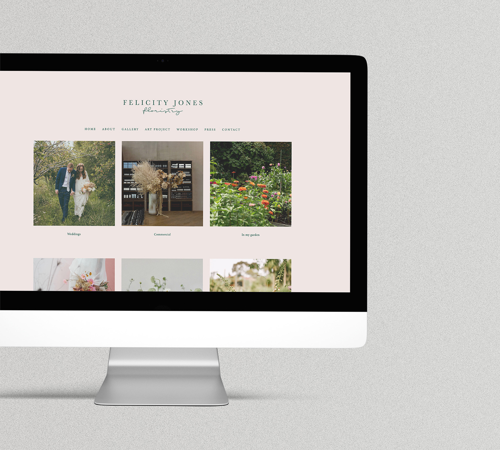
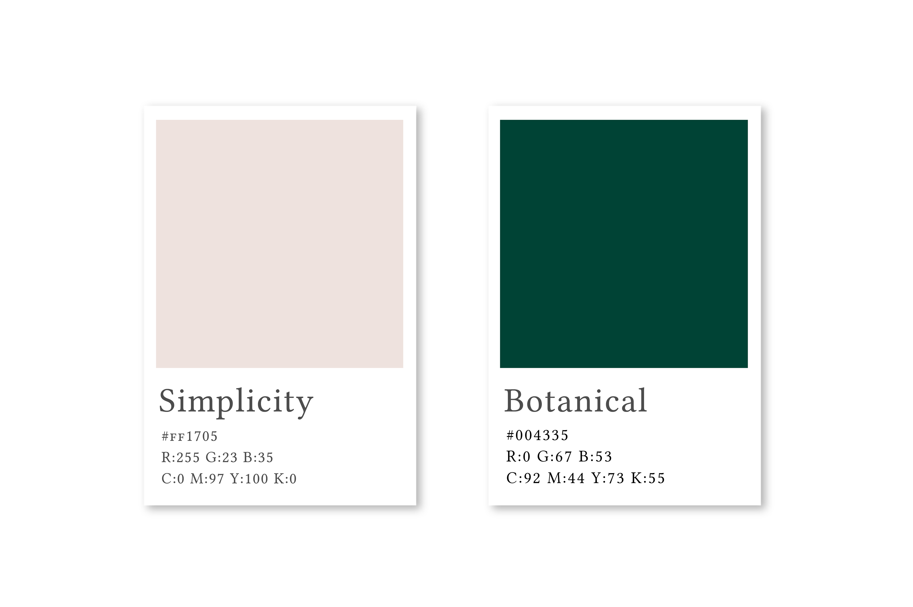
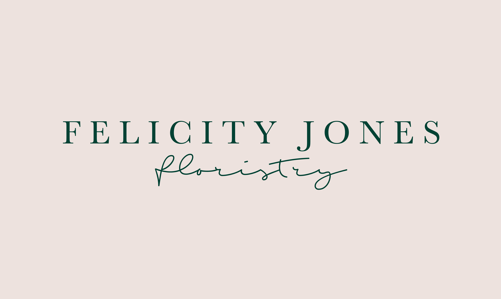
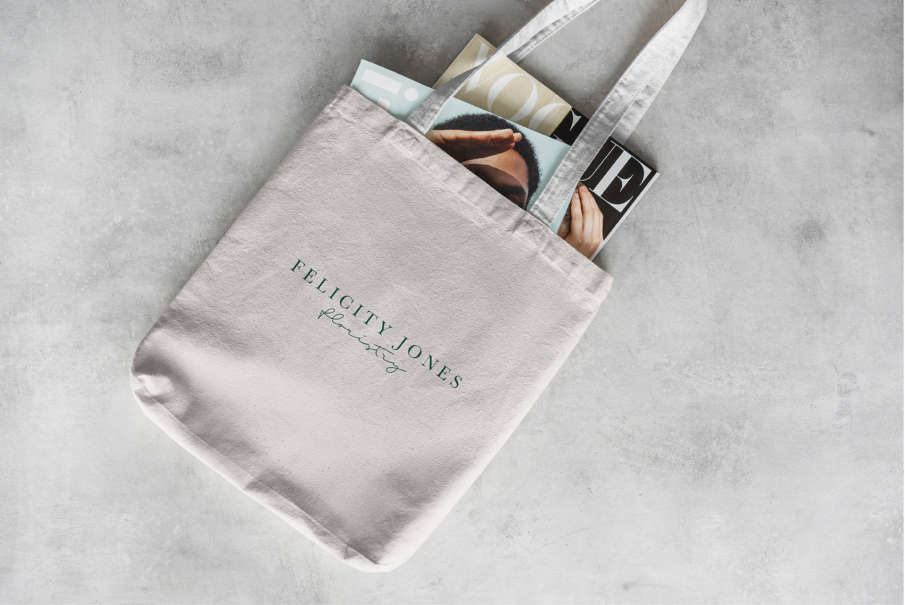
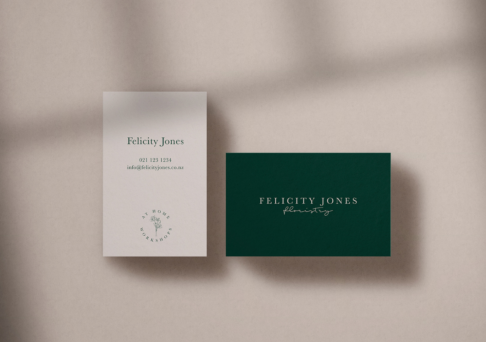
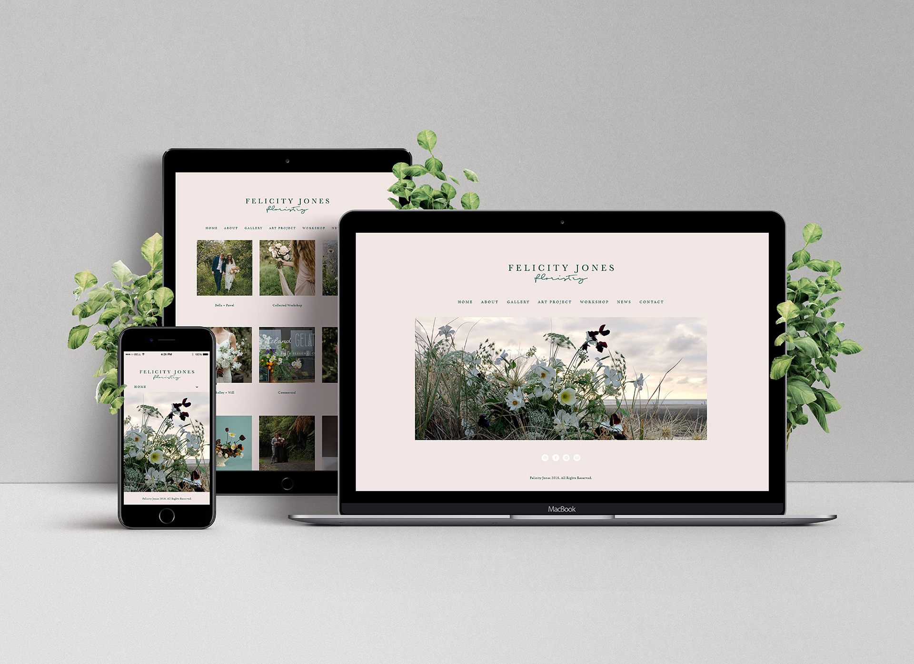

Brand identity project
Felicity Jones Branding & Website
Summary
I created a refreshed identity and website direction for Felicity Jones, designed to showcase her floral work in a cleaner, more elevated way.
The outcome paired a minimal brand system with a restrained digital presence so the floristry itself remained the hero.
Felicity offers bespoke floristry and styling for weddings, events, photoshoots, and anywhere a botanical touch is required. She has a deep appreciation of flowers, and the time and energy required to grow them sustainably influences every aspect of her work.
Felicity approached us for a brand refresh from ‘Green is the thing’ to ‘Felicity Jones’ and to create a website for her growing following on Instagram. Our aim was to create a minimal and clean logo and website that could best showcase Felicity’s work without unnecessary bells and whistles.
We came up with a simple yet sophisticated font pairing of a beautiful serif and free-flowing organic handwritten type.





For over a decade, I’ve been turning ideas into experiences and digital things people actually want to engage with. I work across branding, digital design, marketing, UI/UX, and AI-assisted vibe coding and design workflow. I’m happiest where storytelling, design, and technology overlap as that’s usually where the good stuff happens.